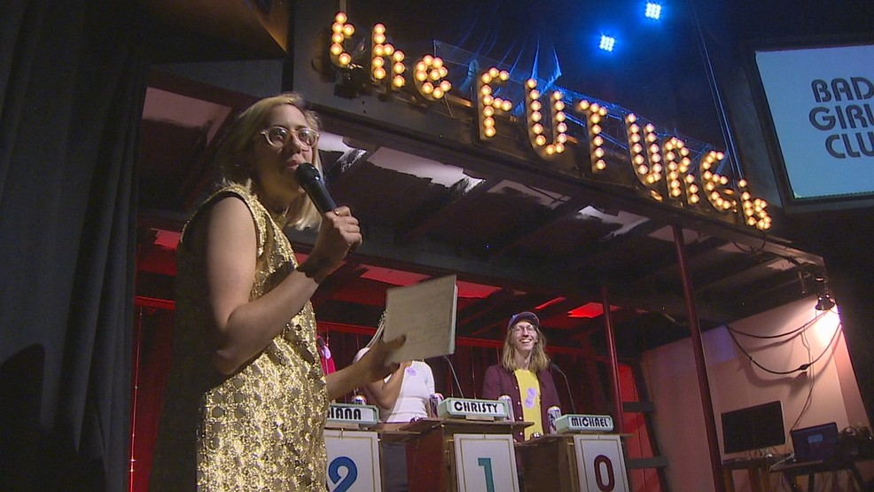
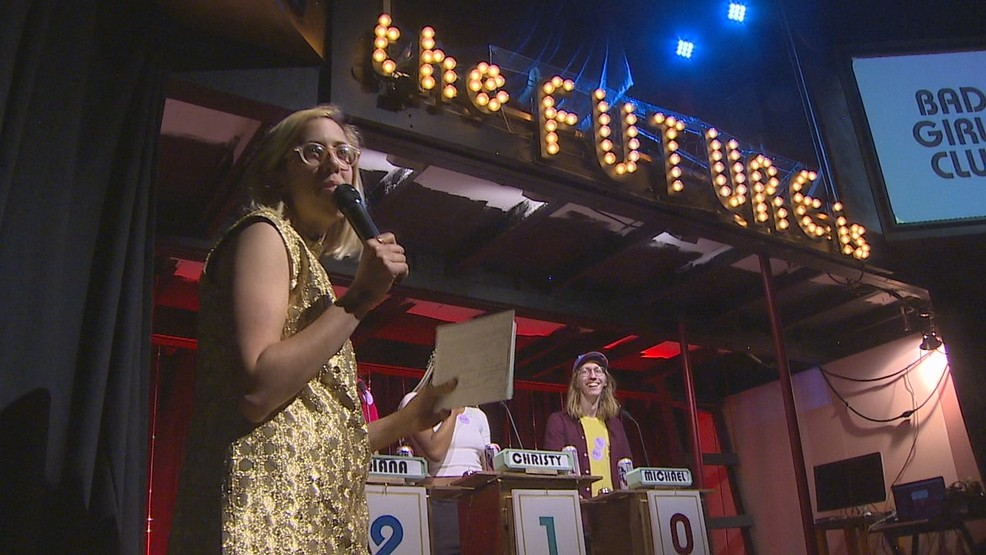
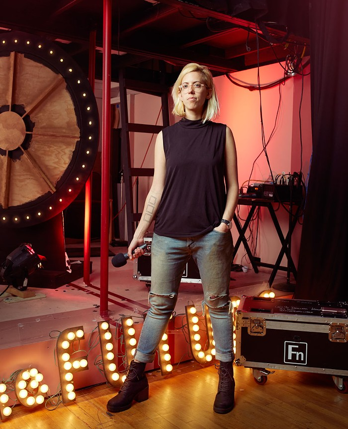
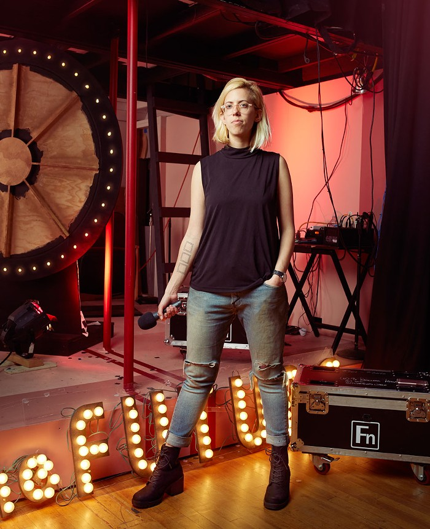
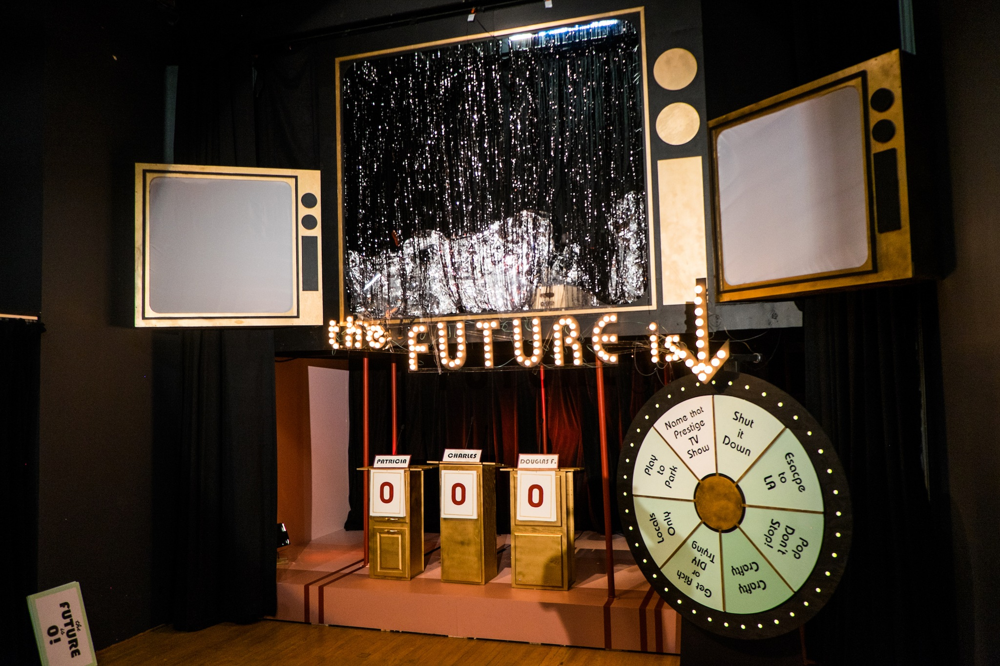

May 23rd, 2017 KOMO News
Seattle Filmmaker Puts New Spin On Old Game Show Classics
What began as house-party-slash-game-night in their Seattle living room is now on stage, with two recent sellout performances on Capitol Hill. "The Future is 0" is filmed in front of a live audience and is the brainchild of Claire Buss and Kat O'Hara. Contestants are pitted against each other, sometimes in silly situations.
Read More... 

May 10th, 2017 The Stranger
Person of Interest: Claire Buss, Filmmaker and Game-Show Host
The Future Is 0 is a satirical game show filmed in front of a live studio audience. The show features Northwest artists as contestants competing in games that are designed to underscore how funny and stupid it is to be a human in 2017.
Read More...

January 4th, 2017 Seattle Weekly
'The Future Is 0' -- A Live Game Show for Nihilists
During a rough winter two years ago, Claire Buss couldn’t stop watching game-show reruns. The artist and filmmaker found herself inexplicably drawn to their shiny, surreal aesthetic—and began to dream about hosting a game show of her own. “The desire to create a world is really appealing to me,” she says.
Read More...

June 25th, 2016 KNKX
This Seattle Filmmaker Loves Game Shows So Much, She Started One In Her Living Room
A lot of kids grow up wanting to make it in show business and Seattle filmmaker Claire Buss was no different. Buss says she was practically raised by TV and she loved every second of it. She especially loved those morning game shows
Read More...